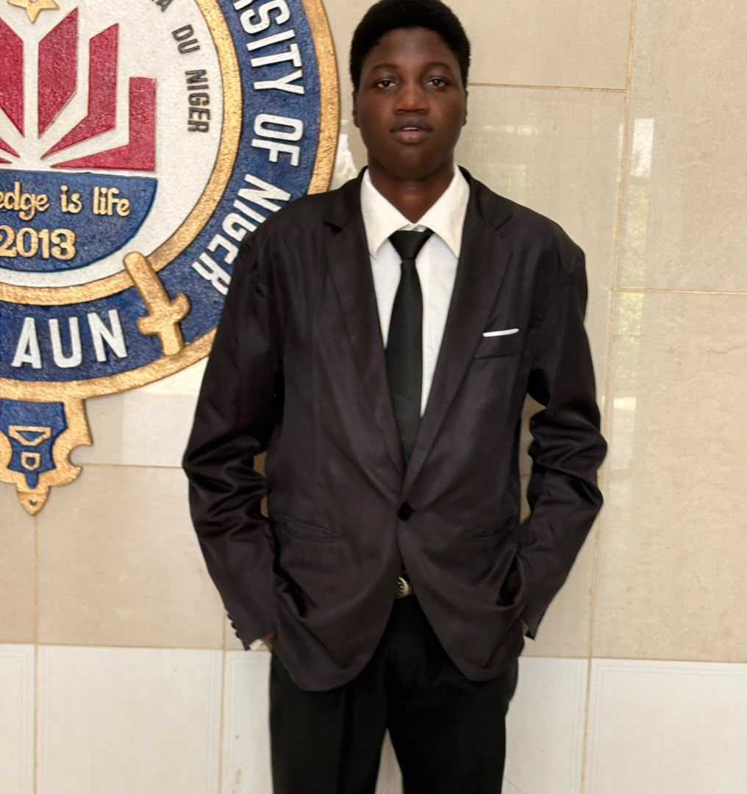

Poetry
Exploring emotions, ideas and human experiences through poetic expression.
Poet · Storyteller · Creative Artist
Meet Nuraini Mohammad Usman, known as Prof Nurain — a Nigerian creative whose interests span poetry, storytelling, photography, essays and the exploration of ideas.
Discover His Story Explore His Work
About the Author
A growing journey shaped by education, creativity, reflection and ambition.
Nuraini Mohammad Usman, widely known as Prof Nurain, is a Nigerian poet, storyteller, photographer, creative artist, essayist and feminist. His creative interests reflect a desire to explore human experiences, express ideas and communicate through words and images.
His story is connected to the Muyawa family in Kano State and his upbringing in Minna, Niger State. These places form part of the background to his personal and educational journey.
Alongside his creative interests, he studies Software Engineering at Maryam Abacha American University of Niger (MAAUN), Maradi. His journey brings together technology, literature and a continuing interest in learning.
Learning and Growth
His education has included several schools and continues through his university studies.
Part of his early educational journey.
Another stage in his academic development.
Part of his continued schooling.
A further chapter in his educational background.
Studying Software Engineering at MAAUN in Maradi, Niger.
Creative Expression
Different ways of exploring ideas, sharing perspectives and expressing creativity.
Exploring emotions, ideas and human experiences through poetic expression.
Developing stories that invite readers to imagine, reflect and discover new perspectives.
Using images to preserve moments, explore visual details and communicate meaning.
Engaging with subjects through writing, reflection and thoughtful expression.
An interest in questions of equality, dignity and the experiences of women in society.
Studying Software Engineering while exploring the relationship between technology and creative ideas.
Writing and Creativity
A space for published poems, stories, essays, photography and other creative projects.
This section will feature selected poems by Prof Nurain when the original works are available.
A future home for short stories, fiction and other narrative projects.
Selected essays, photographs and creative projects will be featured here when ready.
Looking Ahead
Prof Nurain aspires to become a lecturer, continuing to learn, share knowledge and contribute to education. His interests in literature, creative expression and technology are important parts of his developing journey.
Get in Touch
Follow his public profiles or use the contact details below.
This website is a central place to learn about Nuraini Mohammad Usman, his background, creative interests and future projects.
As his portfolio develops, this page can be updated with verified biographical details, published works, new photographs and professional achievements.
For accurate information, use the public contact details and social profiles linked on this page.